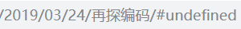
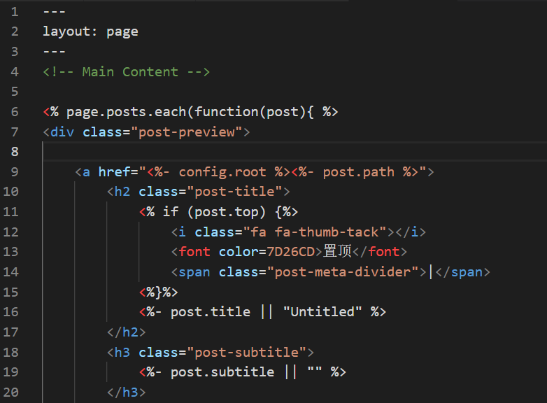
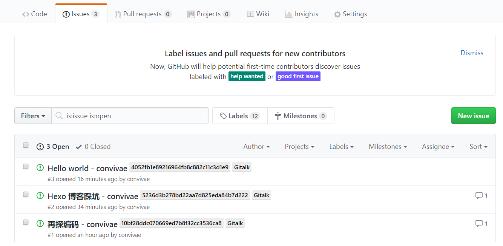
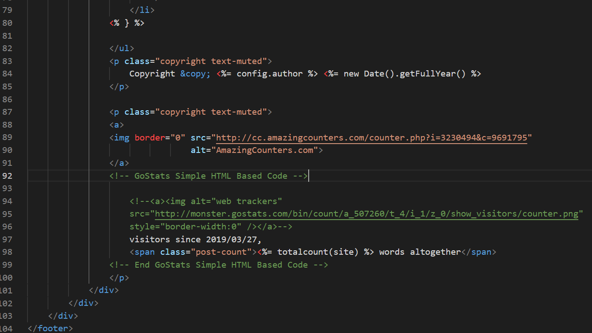
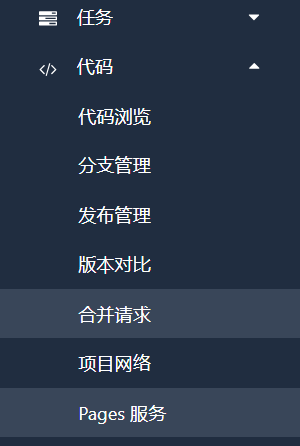
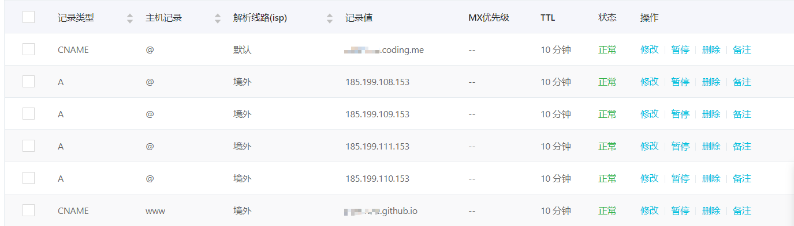

TOC 锚点 undefined
最近使用 hexo 搭了一个博客，然而在写文章测试后发现，文章的导航栏不能正常使用：导航栏的生成是正常的，但是在点击导航栏后并不能跳转到文章的对应位置，而是在网址后面多了一个 /#undefined，如图：

TOC 跳转链接应该是与文章标题对应的，但是 .md 渲染后文章标题并没有对应相应的 id，如果渲染正确，我们期望得到的是：
.../#[标题]
现在基本上可以确认是 TOC 锚点失败造成的。
markdown-it 插件的 bug
我的博客是由 markdown-it 渲染的，由于 Markdown-it 的插件并未渲染 heading 的 id 所以导致锚点失效，这个是 hexo-renderer-markdown-it 的 bug，但是 markdown-it 的作者拒绝修复，认为是其他库的坑。
方法 1
安装 markdown-it-named-headings 插件
这个插件是另外一个大佬针对这个 bug 做的一个修复
首先安装它：
1 | npm install markdown-it-named-headings --save |
然后进入你项目的根目录，修改根目录下 node_modules\hexo-renderer-markdown-it\lib\renderer.js 文件，在 renderer.js 中添加一行以使用此插件：
1 | parser.use(require('markdown-it-named-headings')) |
就像下面这样：
1 | ; |
有很多人用这种方法解决了问题，然而事实证明这种方法并不适合我○|￣|_，我用了之后并没有什么改善，最后是用下面的方法 2 解决的
不过大家有兴趣的可以尝试一下，说不定就成功了呢？
方法 2
经过简单的排查，发现现在编译出的HTML内容中，如下的 markdown 标题：
## title
原来会被编译成 <h2 id="title">title</h2>
而现在会被编译成 <h2><span id="title">title</span></h2>
推测因此导致了生成 TOC 时，H2 元素的 id 属性为未定义，进而导致 TOC 中的锚点也为未定义的问题。
以上的变更，是包 hexo-toc 的变更导致的，具体应该是这次提交。
但是目前仅仅是初步排查，暂时没有确定问题就是出在hexo-toc上，仅仅是认为这个修改可能会导致后续某些生成toc的代码的不兼容。
因此目前阶段，进入你项目根目录的 node_modules\hexo-toc\lib\filter.js 中，把28行~31行修改为：
1 | $title.attr('id', id); |
也就是恢复这次提交，保留旧版本，仅保留28行，其他的内容注释掉。
这样的话，生成的TOC应该就是正常的了。
ps：另外需要注意的是，编译的 markdown 貌似有缓存，因此修改后，你可以再新建一篇文章后再生成，用新文章测试以上手段是否有效修复。旧文章由于缓存问题，可能不会生成新的 HTML（这部分也只是看到现象，暂时没有进行详细了解）。如果新文章确实能够修复此问题，再处理旧文章即可。
根本原因
实际上这是由包 hexo-toc 引起的问题。这个包更新之后产生了不兼容的情况。有些童鞋没有这个问题可能是因为你使用的是旧版本。
在上面提到的 hexo-toc 的提交中，在 HTML 生成前， hexo-toc 去掉了 <h2> 等标签的 id 属性，将其放入内部新生成的 <span>...</span> 中。而 hexo 本身生成 toc 的时候，取得仍是 <h2> 标签的 id，因此得到的是 undefined。具体代码在这里
在这里做兼容的修复应该也是可以的，不过我并没有尝试，有兴趣的可以尝试一下。
添加置顶
运行如下两条命令安装置顶插件：
1 | npm uninstall hexo-generator-index --save |
然后打开 blog\themes\beantech\layout\index.ejs ，在如下位置添加：

1 | <% if (post.top) {%> |
然后在你想置顶的文章md文件里，添加如下配置选项：
1 | top: true |
添加 Gittalk 评论插件
之前试过 Disqus，并不好用，而且界面也并不好看，这次换成了 Gitalk 插件感觉好多了，最大的亮点应该是支持 markdown 语法了。它的评论界面大概长这样：
评论时需要登陆 github 账号，每一次评论都相当于用你的 github 账号在每篇文章对应的 issue 上提问题：

配置 Gitalk
好，现在我们根据 Gitalk 的官方文档，来对网站进行配置，首先找到你自己网站的配置文章的部分，我这里是 \themes\beantech\layout\post.ejs，在和文章同一个 <div> 下（当然，要在文章的下方）添加 gitalk 的代码，这点很重要，否则最后配置好以后你的评论框的位置和大小会变得很奇怪。
1 | <!-- Gitalk start --> |
申请 GitHub Application
上述的代码中需要使用 GitHub Application，如果没有 点击这里申请，填写方式与下面类似
注册之后就得到了 Client ID 和 Client Secret，填入上面的代码中即可。
label 长度不能超过 50 个字符
这是 Github 的限制，我们的 id 使用的是文章的相对路径，路径中含有标题。所以一种解决方案是文章标题短一点；另一种解决方案是对路径算 hash，通过 MD5 加密 id 来缩短label长度，这样，不论标题多长都没有问题。具体操作如下：
从 github 上 下载 md5.min.js 文件，或直接在 themes\beantech\source\js 中创建 md5.min.js 文件并复制下面的代码：
1 | ! function(n) { |
保存文件，进入 \themes\beantech\layout\post.ejs ，将上面 Gitalk 的代码略做修改：
添加一行：
<script src="/js/md5.min.js"></script>
并将：
id: location.pathname,
修改为：
id: md5(location.pathname),
类似下面这样：
1 | <!-- Gitalk start --> |
到此，当你将代码推送到 Github 仓库后，进入你的博客就能看到出现评论框了。
自动初始化 Gitalk 和 Gitment 评论
需要说明的是，Gitalk 需要你点开每篇文章的页面才会创建对应的 issue，对于文章比较多又比较懒的人来说并不友好，你可以参照这篇 自动初始化 Gitalk 和 Gitment 评论 进行设置。
添加图片放大功能
zooming
首先下载 zooming.js 的文件 地址，保存在 themes\beantech\source\js 目录下，打开 themes\beantech\layout\post.ejs，在最下方粘贴：
1 | <script type="text/javascript" src="/js/zooming.js"></script> |
或者，直接用 npm 安装
1 | npm install zooming --save |
然后打开 themes\beantech\layout\post.ejs，在最下方粘贴：
1 | <script src="node_modules/zooming/build/zooming.min.js"></script> |
然后在 .md 文件中引入图片时，在需要进行缩放的图片上内敛 html 语法，加上 data-action="zoom" ，经典的 markdown 语法  不能实现该功能（至少我目前不能，如果你知道怎么实现，请告诉我）
类似下面这样：
1 | <img src="img/some_img.png" alt = "some_text" data-action="zoom" /> |
然后文章里的图片即可单击全屏。
你还可以使用 data-original 属性来使放大的图片指向高清大图，类似下面这样：
1 | <img src="img/thumbnail.jpg" data-action="zoom" data-original="img/original.jpg" /> |
添加访客人数统计和字数统计
访客人数统计
在 amazingcounters 中创建账号并选择合适的样式，将其中的 Standard Code 复制到 themes\beantech\layout\_partial\footer.ejs 下面的位置：

注意去掉默认代码中的 <div align="center"></div> 以及 <href = "...">，这样就能保持博客格式的不变而且不会点击就跳转到他的网站。
字数统计
首先安装插件：
1 | npm i --save hexo-wordcount |
然后在 themes\beantech\layout\_partial\footer.ejs 中添加如下代码：
1 | <span class="post-count"><%= totalcount(site) %> words altogether</span> |
具体位置如上图所示。
将博客同时托管到 coding 上
github 由于服务器位于国外，国内的访问速度很慢，造成了非常不好的体验，我们可以同时部署到国内的托管平台 coding.net 上来加快国内的访问速度。
coding 的准备工作
进入 coding，点击个人版登录，注册并登陆账户，如果你之前注册过腾讯云的服务，会自动跳转到腾讯云开发者平台，进入控制台，新建一个项目，填写项目名称（最好与用户名一致）、项目地址进行创建，进入项目，点击 Pages 服务：

开启 Pages 功能，分支选 master
自定义域名 & 域名解析
Pages 的设置页面可以设置自定义域名，购买域名之后在域名注册商（比如我的是在阿里云）按照下面图片所示设置 DNS 解析：

添加 CNAME 值指向 your-name.coding.net 即可，不必再设置 A 记录，因为 ip 地址可能会变，下面的几个指向境外的是 github 的设置，那几个 ip 地址主要是为了开启 github 的 https 功能，根据 github 官方 的描述，设置一个（即your-name.github.io 实际指向的那个）即可。注意，不建议开启 coding 的 https 功能，某些浏览器会认为他的证书不安全
之后在本地的 source/CNAME 中填写自己的域名，注意不要加 http:// 或 https://，也不要加 www.，因为域名的定义中本身就不包含这些前缀，填写 your-name.xxx 即可
SSH 登陆 coding
其实上一步完成之后就可以修改 _config.yml 的 deploy 属性进行代码同步了，但是 deploy 时每次都要输入密码很麻烦，所以我们开启一下 SSH公钥 的功能
在 coding 的个人设置中找到 SSH公钥，按照 官方文档 进行配置，如果你之前配置过 github 的 SSH，这一步注意不要无脑回车，在生成路径那里要自己另外设置一个路径，否则你原来 github 的公钥就会被新生成的公钥覆盖掉
打开你的项目，复制上面 SSH 的网址，进入本地根目录下 _config.yml，进行如下的配置：
1 | deploy: |
修改其中的ssh地址为你自己项目的地址，然后 hexo clean; hexo g; hexo d，（hexo g; hexo d 可用 hexo d -g 来代替）即可同步更新你的网站到 github 和 coding 了。
to do list
文章分享（微博、微信、空间）链接
更改签名图片
添加邮箱
参考资料
hexojs/hexo-renderer-markdown-it #40
hexo-theme-beantech #11
为博客添加-Gitalk-评论插件
WeiYang Blog